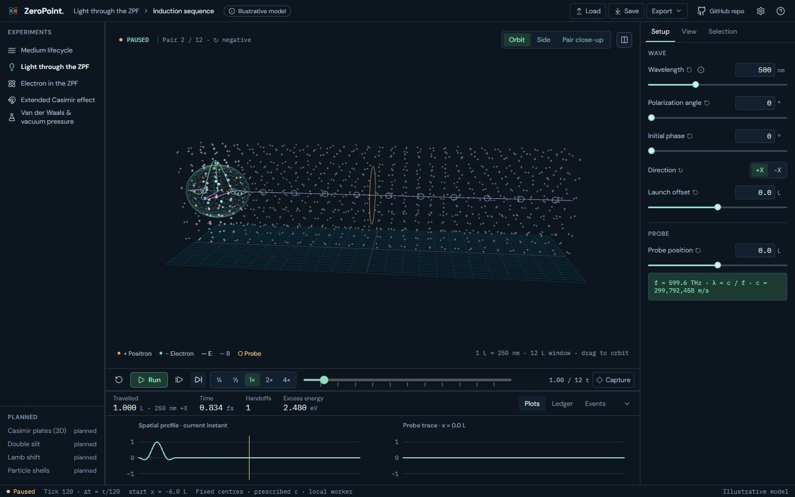
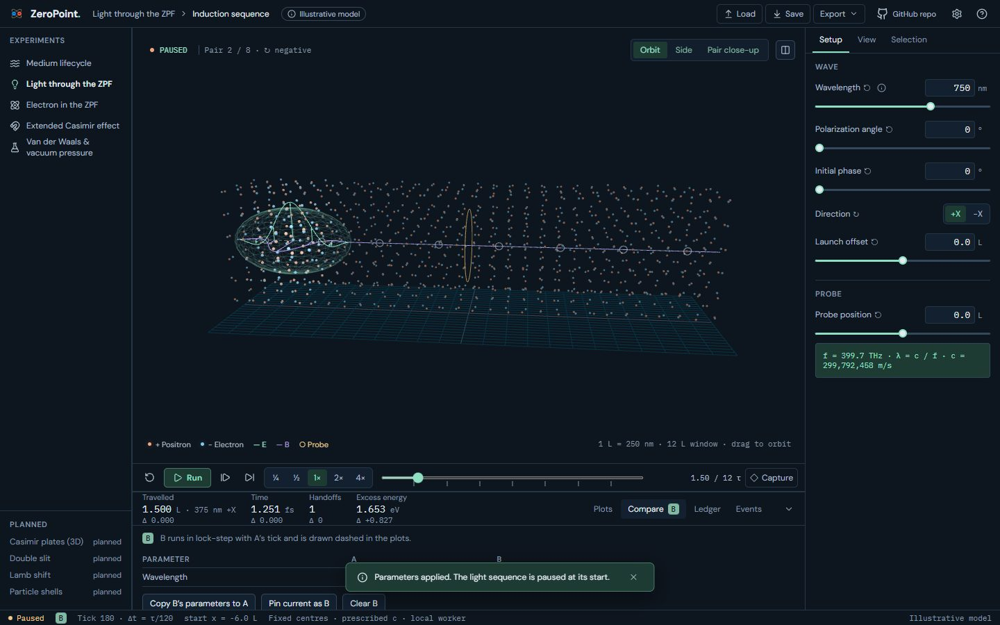
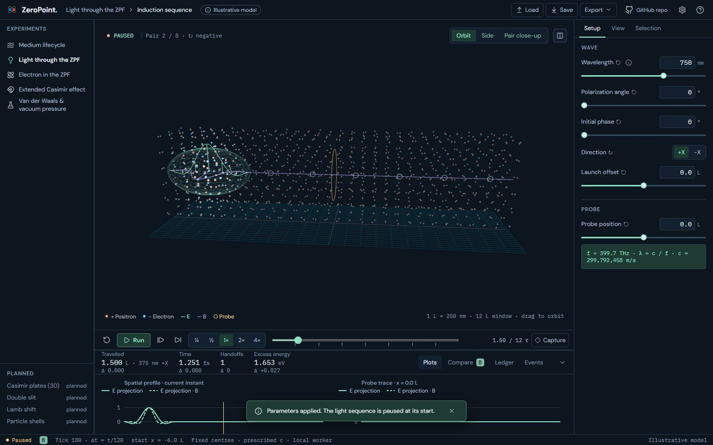

UI 17a · A/B compare (Light, Electron): before and after
Dock › Compare pins the current configuration as B; change A in Setup and B keeps running in lock-step with A's tick. The tab lists only the parameters that differ, as Setup shows them, with Copy B's parameters to A and Clear B. The readout strip shows Δ (B − A) in small text under each value, plots draw B dashed beside A, and a B badge marks the Compare tab and the status bar while B is active. Light and Electron are analytic, so B is the same model with B's parameters: no second worker. Electron's B is pinned within one scenario and clears when the scenario changes. Medium's B (a second simulation worker), Pin as B from a checkpoint or a file, and the seed determinism tests follow in 17b.
Real screens: "before" runs the layer below, and "after" runs this layer. Click an image to open it at full size. Regenerate with node scripts/compare-screens.mjs --before ../16b-saved-views --out docs/ui-previews/17a-compare --set compare --title 'UI 17a · A/B compare (Light, Electron)' --description 'Dock › Compare pins the current configuration as B; change A in Setup and B keeps running in lock-step with A'\''s tick. The tab lists only the parameters that differ, as Setup shows them, with Copy B'\''s parameters to A and Clear B. The readout strip shows Δ (B − A) in small text under each value, plots draw B dashed beside A, and a B badge marks the Compare tab and the status bar while B is active. Light and Electron are analytic, so B is the same model with B'\''s parameters: no second worker. Electron'\''s B is pinned within one scenario and clears when the scenario changes. Medium'\''s B (a second simulation worker), Pin as B from a checkpoint or a file, and the seed determinism tests follow in 17b.'.
Light · Dock › Compare: B pinned at 500 nm, A at 750 nm, Δ in the readout strip




Light · Dock › Plots: B drawn dashed beside A


